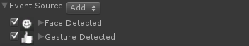

Triggers and Rules |
Top Previous Next |
|
Triggers define the user interactions. They hold relevant data about the interactions. In some actions, the triggers are preset and you can only configure the rules attached to each trigger. This is true for actions where the interaction is tightly coded with a specific trigger such as Rotate action or Tracking action. In other actions, you can add and remove triggers to the action. That is true for more generic actions such as the Hide action or the Enable Behavior action. The Rules are specific SDK code that implements certain Unity events, actions and data types. You can use rules in one or multiple triggers. When a rule is part of a trigger, the rule and its configuration parameters are shown in the Unity Editor's UI under the specific trigger(s). When attaching more than one rule to a trigger, the rules are used in an OR relationship. This means that if one of the rules fires, the trigger is triggered with the firing rule’s values. The order of which they display in the Unity Editor's UI is the order of priority. Assume a trigger is consist of Face Detected and Gesture Detected rules, if face is detected, the trigger is fired with the face detection values and the gesture detected rule is ignored, as illustrated in Figure 92.  Figure 92: Rules and The Rules Order
|